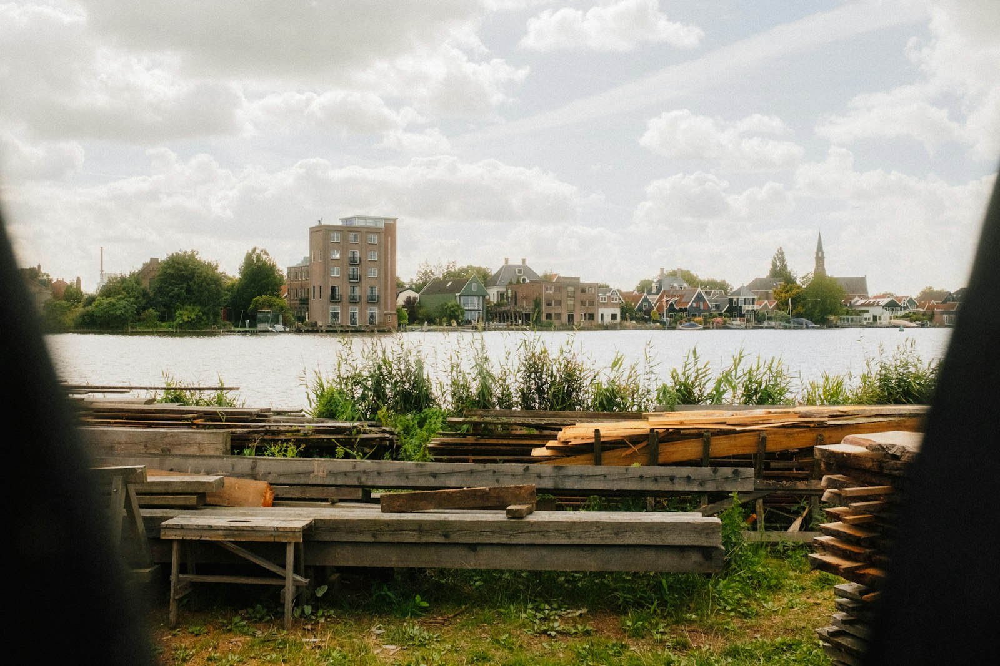

Mill Lane, east bank of the Sall
Pick your own boards in the racks. We measure and price them at the saw.
Open
- Mon–Fri
- 07:30–16:30
- Saturday
- 08:00–12:00
- Sunday
- Closed
From Sallowby station
0.8 miles, 15 minutes on foot. Leave by the river exit, follow the towpath north past the weir, cross the footbridge, Mill Lane is the first right.

In the yard
- Park in the marked bays by the office; vans and trailers drive to the loading bay.
- Safety boots or toe caps on beyond the gate. We lend them.
- Under-16s stay with an adult and away from the saws.
- Dogs stay in the car.
- Card or bank transfer. No cash after 15:00.